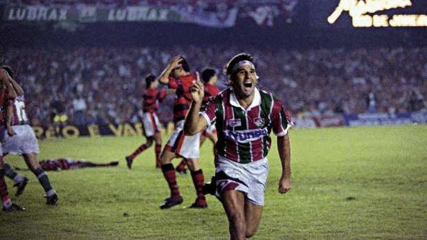

O chuvoso dia 25 de junho de 1995 guardaria surpresas maiores do que as nuvens poderiam indicar. Era domingo, dia de ir ao Maracanã e, principalmente, dia de Fla-Flu. De um lado havia um super Flamengo formado por Sávio e Romário, mas que também tinha Branco, Mazinho e Vanderlei Luxemburgo, como treinador. Do outro, estava o Fluminense, de Renato Gaúcho, Ailton, Ézio e Djair, sob o comando de Joel Santana. E diante das duas equipes estava o título da Campeonato Carioca. Com mais de 120 mil pessoas presentes no Estádio Jornalista Mario Lago Filho, o Fluminense fez um primeiro tempo extraordinário. Tudo deu certo para o Tricolor, que abriu o placar com Renato Gaúcho aos 30 minutos e aumentou ainda na primeira etapa com Leonardo, aos 42. No segundo tempo, oos 26 minutos Romário marcou pela primeira vez (em uma partida oficial) um gol contra o Fluminense e aos 32 minutos, Fabinho fez o gol de empate. O resultado daria o título ao Flamengo, mas quis o destino que tudo mudasse de figura aos 42 minutos. O meia Ailton, após dois dribles, arriscou um chute forte da direita para a pequena área rubro-negra. A bola ia para fora, mas desviou na barriga de Renato Gaúcho e foi para o fundo da rede adversária. Festa para a torcida do Fluminense!
No começo do futebol, ir ao estádio era um ato de elegância, principalmente, no Fluminense. Por isso o Fluminense até hoje tem essa fama de clube aristocrático. As mulheres se enfeitavam como se fosse ao Grande Prêmio Brasil, colocavam vestidos de alta costura, chapéus, luvas. Mesmo que a temperatura na cidade estivesse por volta dos 40º de temperatura, elas iam de luvas. Como o calor era muito grande, elas tiravam as luvas e ficavam com as luvas nas mãos, e como ficavam nervosas com o jogo, elas as torciam ansiosamente. Os homens usavam a palheta, um chapéu de palha muito comum na época, muito elegante e também ficavam com o chapéu na mão enquanto torciam. O Coelho Neto, que além de poeta e cronista era pai de dois jogadores do Fluminense: o Preguinho, que foi o primeiro homem a fazer um gol pela seleção brasileira em uma Copa do Mundo, e do Mano, que morreu em consequência de um jogo de futebol, levou uma bolada e acabou morrendo; pois o Coelho Neto escreveu uma crônica em que ele usava a expressão “as torcedoras”, referindo-se às mulheres e dali a expressão pegou e nasceu a torcida.
No final de outubro de 2009, mais precisamente no dia 29, um Fluminense fadado à queda entrava em um Maracanã vazio, debaixo de chuva, contra um Atlético-MG que lutava pelo título. Os matemáticos calculavam 99% de chance de rebaixamento para o lanterna da competição (flu). Era preciso uma sequência de resultados de campeão. E aconteceu. O início foi exatamente contra o Galo: 2 a 1. Após seis vitórias e um empate, sendo um dos jogos a incrível virada para cima do Cruzeiro depois de estar perdendo por 2 a 0, no Mineirão, o time do então técnico Cuca se livrou da Série B.